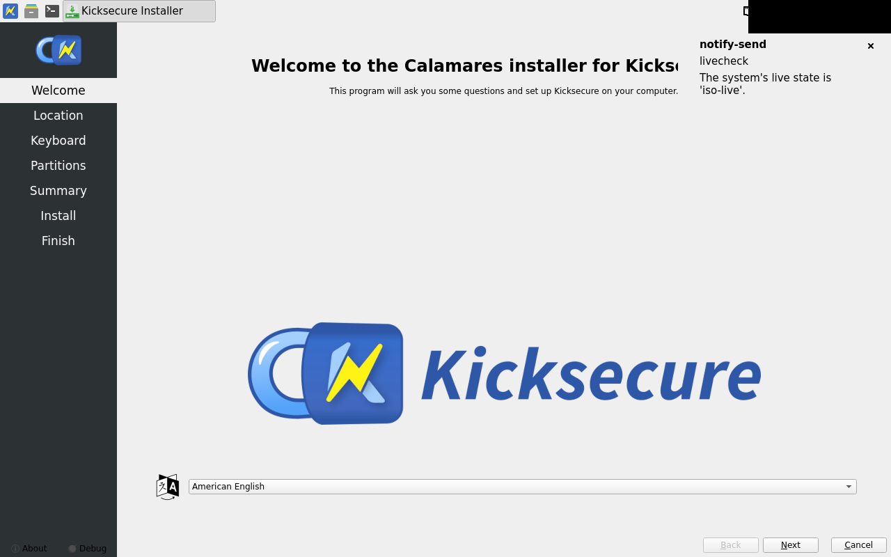
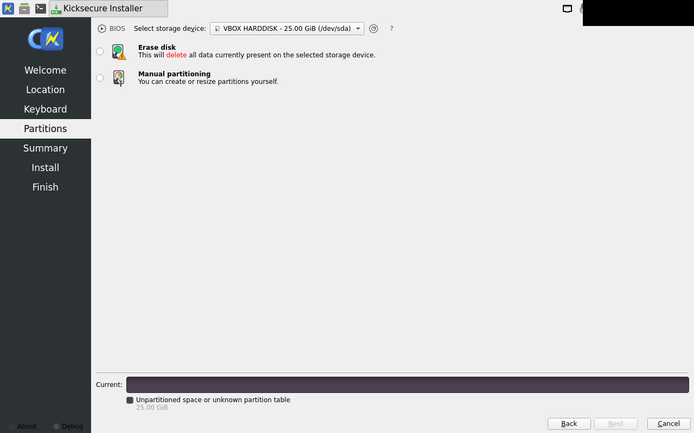
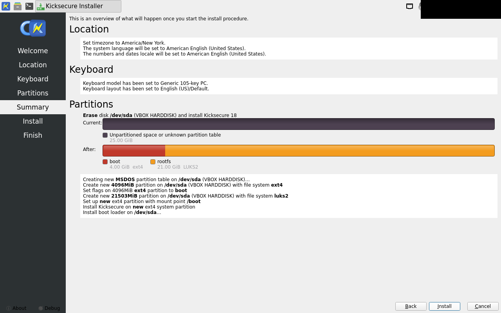
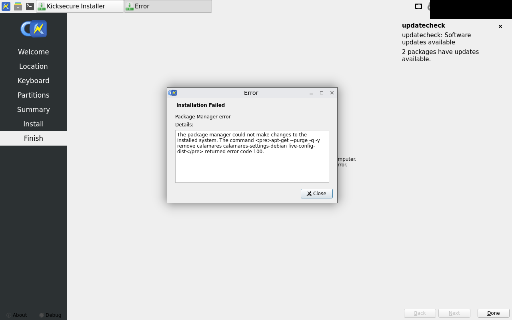

calamares-install fail
exit 5
...d an error code (1)"
[PYTHON JOB]: "stderr:None"
12:20:04 [6]: virtual void Calamares::JobThread::run()
Skipping non-emergency job "Running shell processes..."
.. Skipping non-emergency job "dracut"
.. Skipping non-emergency job "Unmounting file systems..."
.. Skipping non-emergency job "Running shell processes..."
12:20:05 [1]: void Calamares::ViewManager::onInstallationFailed(const QString&, const QString&)
ERROR: Installation failed: "Package Manager error"
.. - message: "Package Manager error"
.. - details: The package manager could not make changes to the installed system. The command <pre>apt-get --purge -q -y remove calamares calamares-settings-debian live-config-dist</pre> returned error code 100.
12:20:05 [6]: void Calamares::ViewManager::onInstallationFailed(const QString&, const QString&)
Calamares will quit when the dialog closes.
12:20:05 [6]: void Calamares::callQmlFunction(QQuickItem*, const char*)
QML "onLeave()" is missing.
12:20:05 [6]: void Config::doNotify(bool, bool)
Notification not sent; completion: failed
12:20:05 [6]: void {anonymous}::PowerManagementInterface::uninhibitSleep()
Sleep was never inhibited.
pass -- within tolerance

pass -- within tolerance

pass -- within tolerance

pass -- within tolerance
